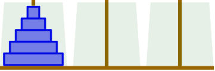
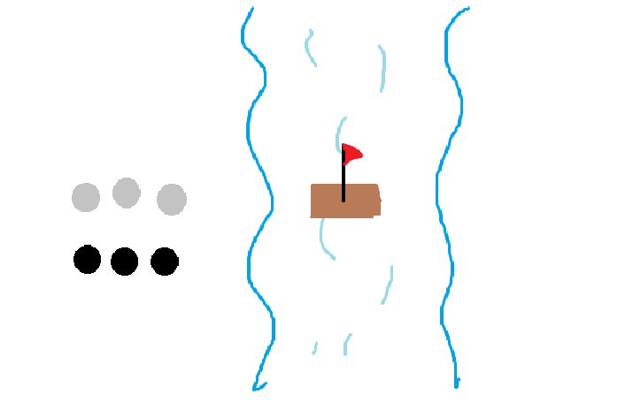
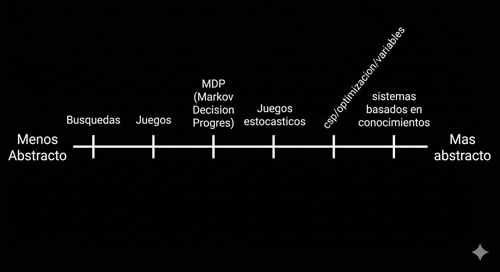

Primer parcial: Inteligencia Artificial
Alumno: Hernández Astorga Francisco Ricardo
Expediente: 223219591
Semestre: 6°
Repositorio de notas personales para la materia de Inteligencia Artificial.
Clase – 12/01/2026
¿Qué es la Inteligencia Artificial?
Es un sistema/herramienta que imita la inteligencia y razonamiento humano para llevar a cabo la resolucion de problemas.
Un punto interesante es cuestionar si es correcto que la IA imite únicamente la inteligencia humana.
"Maximizar la esperanza (expectation) de una utilidad futura".
Clase – 13/01/2026
PEAS (Performance, Entorno, Actuadores, Sensores)
PEAS es un marco de referencia para describir una tarea desde el punto de vista de un agente inteligente.
Permite identificar: - Performance (Desempeño): qué tan bien realiza la tarea el agente. - Environment (Entorno): el mundo en el que opera el agente. - Actuators (Actuadores): cómo el agente actúa sobre el entorno. - Sensors (Sensores): cómo el agente percibe el entorno.
Durante la clase nos enfocamos principalmente en la parte de sensores, analizando cómo la información disponible condiciona las decisiones del agente.
Ejemplo 1: Torres de Hanoi
En este ejemplo, analizamos los posibles estados que tiene el juego de torres de Hanoi.

Donde como se ve en la imagen, se tienen 5 discos, uno cada vez mas grande que el anterior y deben colocarse en otra de las torres siguiendo las condiciones
y esto nos queda de la siguiente manera:
S = [S₁, S₂, S₃, S₄, S₅]
Sᵢ ∈ {A, B, C}
|S| = 3⁵
Ejemplo 2: 3 esclavistas y 3 trabajadores sin paga cruzando un río
En este problema se ve reflejado que aunque haya menos combinaciones, es mas complejo debido a las rutas posibles.

Aqui los estados serian el numero de esclavistas de un lado del rio, el numero de trabajadores sin paga de un lado del rio y el lado del rio, dandonos la operacion de 4 x 4 x 2, dando un total de 32 estados.
Clase – 14/01/2026
Propiedades del entorno
- Estático: El entorno no cambia si el agente no actúa. Es como resolver un crucigrama; el papel no va a cambiar de lugar ni las letras se van a mover mientras decides qué escribir.
- Dinámico: El entorno cambia constantemente, incluso si el agente se queda quieto. Como jugar al fútbol o conducir un coche: si te detienes a pensar demasiado, la situación a tu alrededor ya es otra.
- Discreto: Hay un número finito y bien definido de posibilidades. En el ajedrez, las casillas están numeradas (A1, B2) y los turnos son claros. No hay un "punto medio" entre la casilla A1 y la A2.
- Continuo: Las variables fluyen sin saltos, como el tiempo, la velocidad o la posición exacta. Un robot que camina opera en un entorno continuo porque su ángulo de pierna puede ser
30°,30.1°,30.001°, etc. - Totalmente Observable: El agente tiene acceso a toda la información necesaria para tomar una decisión. Ejemplo: El ajedrez (ves todo el tablero).
- Parcialmente Observable: El agente solo ve una parte. Ejemplo: El póker (no ves las cartas de los demás) o conducir (no sabes qué hay a la vuelta de la esquina).
- No Observable: El agente no tiene sensores o no puede percibir nada del entorno. Básicamente, actúa a ciegas.
- Determinista: Si haces una acción, el resultado siempre será el mismo. Si en un videojuego mueves una pieza a la derecha, siempre termina a la derecha. No hay azar.
- Estocástico: Hay incertidumbre o azar. Aunque tú hagas lo mismo, el resultado puede variar. Ejemplo: Tirar un dado o el clima; hay una probabilidad, pero no una certeza absoluta.
- Episódico: Cada acción es independiente. Como una IA que clasifica fotos: si clasifica mal una foto de un gato, eso no afecta en nada su capacidad para clasificar la siguiente foto de un perro.
- Secuencial: Lo que hagas ahora afectará lo que pase después. En un juego de estrategia, si pierdes a tu mejor unidad al principio, esa decisión "te persigue" durante el resto de la partida.
Propiedades del Entorno y Funciones de Transición
Tambien vimos ejemplos de como se representarian algunas propiedades de entorno, ejemplos como los siguientes:
1. Entorno Estático, Determinista, Observable, Discreto.
Fórmula: \(S = f(a)\)
El estado final depende única y exclusivamente de la acción realizada. El entorno no cambia por sí solo y no importa el historial previo.
Un ejemplo podria ser un conversor de unidades, como podria ser de Celsius a Fahrenheit. Si la acción es ingresar 100, el estado de salida siempre será 212. No importa qué número convertiste antes ni cuánto tiempo esperes.
2. Entorno Dinámico, Determinista, Observable, Discreto.
Fórmula: \(S_{k+1} = f(S_k, a_k)\)
El entorno evoluciona. El siguiente estado (\(S_{k+1}\)) es el resultado de aplicar una acción (\(a_k\)) sobre el estado actual (\(S_k\)). Aquí el "pasado" inmediato o la situación actual es crítica.
En el ajedrez, para saber cómo quedará el tablero (nuevo estado), necesitas saber cómo estaban las piezas antes (estado actual) y qué movimiento hiciste (acción).
3. Entorno Estocástico, Estatico, Discreto)
Fórmula: \(S = (S^1, ... , S^m)\) donde \(m\) es la cardinalidad de \(S\).
\(Pr[S | a]\) = \([Pr[S = s^1 | a], ... , Pr[S = s^m | a]]\)
Esto es cuando no hay certeza absoluta. La misma acción en el mismo estado puede llevar a resultados diferentes debido al azar o a variables desconocidas.
Un ejemplo podria ser lanzar un dado. El estado inicial es el dado en tu mano (\(S\)), la acción es lanzar (\(a\)), pero el estado final es incierto, tienes una probabilidad de \(1/6\) para cada cara. Aunque el entorno sea estático (el dado no cambia de cara mientras piensas), el resultado de la acción es aleatorio.
Clase – 15/01/2026
En la clase de hoy profundizamos en la estructura de los agentes y cómo interactúan con su entorno.
¿Qué es un Agente?
Un agente es cualquier entidad que percibe su entorno a través de sensores y actúa sobre él mediante actuadores.
- Percepciones: Se refiere al contenido que los sensores del agente están recibiendo en un momento dado.
- Función del Agente: Es la descripción matemática que mapea cualquier secuencia de percepciones con una acción (\(act = AgentFn(percept)\)).
- Programa del Agente: Es la implementación real y física de la función del agente que corre sobre una arquitectura específica.
Ejemplo: El Mundo de la Aspiradora
Analizamos un modelo simplificado donde un robot opera en un entorno con dos localizaciones, A y B.
- Percepciones: El agente percibe su ubicación actual y si hay suciedad (ej.
[A, Sucio]). - Acciones: El agente puede decidir entre
Izquierda,Derecha,SuccionaroNoOp(no hacer nada).
Racionalidad y Desempeño
Un agente inteligente no es necesariamente perfecto u omnisciente, sino que busca ser racional, como hablamos en clases anteriores.
- Medida de desempeño: Es el criterio objetivo que evalúa qué tan exitosa es una secuencia de estados en el entorno (ej. ganar puntos por cada cuadro limpio).
- Agente Racional: Es aquel que elige la acción que maximiza el valor esperado de su medida de desempeño, basándose en su secuencia de percepciones y su conocimiento previo.
- Diferencia clave: La racionalidad no es igual a la perfección, un agente racional puede fallar si la información es incompleta, pero su decisión sigue siendo la mejor posible con los datos que tenía.
Tipos de Agentes
Dependiendo de la complejidad de su "cerebro", clasificamos a los agentes en:
- Agentes de Reflejo Simple: Toma decisiones basándose únicamente en lo que percibe en este preciso instante ("Si veo X, hago Y"). Ignora todo lo que pasó antes. \(a = f(p)\)
- Agentes basados en el historial: Toma decisiones considerando toda la secuencia de cosas que ha percibido desde que se encendió, no solo la actual. \(a = f([p_1, p_2, \dots, p_n])\)
- Agentes basados en modelos: Mantiene un "estado interno" (una memoria) para rastrear aspectos del mundo que no puede ver en este momento. Sabe cómo cambia el mundo por sí solo y cómo lo afectan sus acciones. \(a = f_m(p)\)
- Agentes basados en metas: No solo reacciona, sino que planea. Tiene un objetivo claro (meta) y busca la secuencia de acciones necesaria para alcanzarlo. \(a = f_m(p, s)\)
- Agentes basados en utilidad: Va un paso más allá de las metas. No solo quiere llegar al objetivo, sino hacerlo de la mejor manera posible (más rápido, más seguro, más barato). Maximiza una medida de "felicidad" o utilidad. \(a = f_m(p, s)\)
Clase – 16/01/2026
En esta clase nos enfocamos mas en como trasncurriria el curso, viendo el siguiente cronograma:

Tabien vimos los distintos tipos de agentes que veriamos en el curso:
| Agentes reactivos | Agentes basados en metas | Modelos basados en utilidad |
|---|---|---|
| Estocasticos, Discretos, Observable, Deterministas | Dinamico, Discretos, Observable, Deterministas | Estocasticos |
Y por ultimo vimos los criterios de evalucion:
Actividades de evaluación continua (notas): 10%
Actividades de evaluación de conocimientos (problemarios): 30%
Actividades de evaluación de competencias (laboratorios): 30%
Exámenes: 30%
Donde se menciono que se necesita el 60% minimo, en las actividades de evalucion de competencias para aprobar el curso.
Clase – 19/01/2026
En esta clase profundizamos mas sobre el entorno, donde vimos que:
\(S = Estado\)
\(S = (S_1, . . ., S_n) \in D_1 x . . x D_n = S\)
\(a_t \in A = (a_1, . . ., a_m)\)
\(a_t \in A(s_t)\) acciones legales
\(p_t \in \rho\) espacio de percepciones
\(p_t = percepción(S_t)\)
\(percepción: S \rightarrow \rho\)
\(S_{t + 1} = transición(S_t, a_t)\)
\(c = costo(s_t, a_t, S_{t + 1})\)
Y analizamos y discutimos el codigo doscuartos_o.py y doscuartos_f.py.
#!/usr/bin/env python
# -*- coding: utf-8 -*-
"""
doscuartos_f.py
----------------
Ejemplo de un entorno muy simple y agentes idem
"""
import entornos_f
from random import choice
__author__ = 'juliowaissman'
class DosCuartos(entornos_f.Entorno):
"""
Clase para un entorno de dos cuartos.
Muy sencilla solo regrupa métodos.
El estado se define como (robot, A, B)
donde robot puede tener los valores "A", "B"
A y B pueden tener los valores "limpio", "sucio"
Las acciones válidas en el entorno son
("ir_A", "ir_B", "limpiar", "nada").
Todas las acciones son válidas en todos los estados.
Los sensores es una tupla (robot, limpio?)
con la ubicación del robot y el estado de limpieza
"""
def accion_legal(self, _, accion):
return accion in ("ir_A", "ir_B", "limpiar", "nada")
def transicion(self, estado, acción):
robot, a, b = estado
c_local = 0 if a == b == "limpio" and acción == "nada" else 1
return ((estado, c_local) if a == "nada" else
(("A", a, b), c_local) if acción == "ir_A" else
(("B", a, b), c_local) if acción == "ir_B" else
((robot, "limpio", b), c_local) if robot == "A" else
((robot, a, "limpio"), c_local))
def percepcion(self, estado):
return estado[0], estado[" AB".find(estado[0])]
class AgenteAleatorio(entornos_f.Agente):
"""
Un agente que solo regresa una accion al azar entre las acciones legales
"""
def __init__(self, acciones):
self.acciones = acciones
def programa(self, _):
return choice(self.acciones)
class AgenteReactivoDoscuartos(entornos_f.Agente):
"""
Un agente reactivo simple
"""
def programa(self, percepcion):
robot, situacion = percepcion
return ('limpiar' if situacion == 'sucio' else
'ir_A' if robot == 'B' else
'ir_B')
class AgenteReactivoModeloDosCuartos(entornos_f.Agente):
"""
Un agente reactivo basado en modelo
"""
def __init__(self):
"""
Inicializa el modelo interno en el peor de los casos
"""
self.modelo = ['A', 'sucio', 'sucio']
def programa(self, percepción):
robot, situación = percepción
# Actualiza el modelo interno
self.modelo[0] = robot
self.modelo[' AB'.find(robot)] = situación
# Decide sobre el modelo interno
a, b = self.modelo[1], self.modelo[2]
return ('nada' if a == b == 'limpio' else
'limpiar' if situación == 'sucio' else
'ir_A' if robot == 'B' else 'ir_B')
def prueba_agente(agente):
entornos_f.imprime_simulacion(
entornos_f.simulador(
DosCuartos(),
agente,
["A", "sucio", "sucio"],
100
),
["A", "sucio", "sucio"]
)
def test():
"""
Prueba del entorno y los agentes
"""
print("Prueba del entorno con un agente aleatorio")
prueba_agente(AgenteAleatorio(['ir_A', 'ir_B', 'limpiar', 'nada']))
print("Prueba del entorno con un agente reactivo")
prueba_agente(AgenteReactivoDoscuartos())
print("Prueba del entorno con un agente reactivo con modelo")
prueba_agente(AgenteReactivoModeloDosCuartos())
if __name__ == "__main__":
test()
Clase – 20/01/2026
A partir de esta fecha, una parte de las notas esta hecha con IA.
En esta clase recalcamos mas la definición de Agente y Entorno.
Un agente es cualquier entidad que percibe su entorno y actúa sobre él. * Sensores: Mecanismos para recibir información del entorno (percepciones). * Actuadores: Mecanismos para operar o modificar el entorno (acciones). * Percepción: El contenido de lo que captan los sensores en un instante específico. * Secuencia de Percepciones: El historial completo de todo lo percibido por el agente hasta la fecha.
La Función del Agente: Matemáticamente, el comportamiento del agente se describe como una función que mapea una secuencia de percepciones a una acción: $\(f : P^* \rightarrow A\)$
El Concepto de Racionalidad
Un agente racional es aquel que elige la acción que maximiza su medida de rendimiento esperada, dada la evidencia aportada por la secuencia de percepciones y su conocimiento incorporado.
La racionalidad depende de 4 factores: 1. Medida de Rendimiento: El criterio objetivo de éxito (¿qué queremos lograr?). 2. Conocimiento del Entorno: Lo que el agente ya sabe sobre el medio. 3. Acciones: Lo que el agente es capaz de hacer. 4. Secuencia de Percepciones: Lo que el agente ha "visto" hasta ahora.
Importante: Racionalidad \(\neq\) Omnisciencia. La racionalidad se basa en el rendimiento esperado (lo mejor que puedes hacer con lo que sabes), no en el resultado perfecto (que requeriría conocer el futuro).
Especificación del Entorno (REAS).
Para diseñar un agente, debemos definir primero el Entorno de Trabajo. Usamos el acrónimo REAS (en inglés PEAS).
| Sigla | Concepto | Definición en Apuntes |
|---|---|---|
| R | Rendimiento (Performance) | ¿Cómo medimos el éxito? |
| E | Entorno (Environment) | ¿En dónde opera el agente? |
| A | Actuadores (Actuators) | ¿Con qué actúa el agente? |
| S | Sensores (Sensors) | ¿Con qué percibe el agente? |
Ejemplo: Sistema de Diagnóstico Médico.
- Rendimiento: Pacientes sanos, minimizar costos, evitar demandas.
- Entorno: Paciente, hospital, personal médico.
- Actuadores: Pantalla (preguntas/diagnósticos), derivaciones, recetas.
-
Sensores: Teclado (entrada de síntomas), historial médico digital.
-
Tipos de Entornos.
Las propiedades del entorno determinan la dificultad del diseño del agente:
- Totalmente Observable vs. Parcialmente Observable: ¿Los sensores detectan todo el estado relevante del mundo?
- Determinista vs. Estocástico: ¿El siguiente estado del entorno está determinado completamente por el estado actual y la acción? (Si hay azar, es estocástico).
- Episódico vs. Secuencial: ¿La experiencia se divide en episodios independientes (como clasificar imágenes) o cada decisión afecta a las futuras (como ajedrez)?
- Estático vs. Dinámico: ¿El entorno cambia mientras el agente está "pensando"?
- Discreto vs. Continuo: ¿Hay un número finito de estados/acciones o son magnitudes continuas?
- Agente Individual vs. Multiagente: ¿Hay otros agentes actuando en el entorno?
Estructura de los Agentes.
El Programa del Agente implementa la función del agente (\(f\)) en una arquitectura física. Existen 4 tipos básicos de programas:
- Agentes Reactivos Simples: Responden directamente a la percepción actual (reglas condición-acción). No tienen memoria.
- Agentes Reactivos Basados en Modelos: Mantienen un estado interno para rastrear partes del mundo que no pueden ver ahora mismo.
- Agentes Basados en Objetivos (Metas): Utilizan información sobre un "estado deseado" para planificar sus acciones.
- Agentes Basados en Utilidad: Tienen una "función de utilidad" interna que les permite preferir estados más felices/útiles sobre otros (útil cuando hay objetivos conflictivos).
Clase – 21/01/2026
Formulación del Problema de Aprendizaje.
El aprendizaje supervisado se formaliza matemáticamente con los siguientes componentes:
- Función Objetivo (\(f\)): Es la función "verdadera" que queremos descubrir.
- Mapea entradas a salidas: \(f: \mathcal{X} \rightarrow \mathcal{Y}\).
- Propiedad clave: Existe, pero es desconocida para nosotros.
- Datos de Entrenamiento (\(D\)): Una muestra de datos históricos generados por una distribución desconocida.
-
\[ D = \{(x^{(1)}, y^{(1)}), \dots, (x^{(M)}, y^{(M)})\} \]
- Donde cada $\(y^{(i)}\) proviene de la función objetivo (a veces con ruido): \(y^{(i)} = f(x^{(i)})\)$.
- Nota: En tus apuntes, \(M\) representa el tamaño de la muestra (número de datos).
-
El Modelo y las Hipótesis.
Para aproximar \(f\), definimos un modelo paramétrico:
- Parámetros (\(\Theta\)): El conjunto de configuraciones posibles (ej. \(\Theta = \mathbb{R}^k\)).
- Conjunto de Hipótesis (\(\mathcal{H}\)): Es el conjunto de todas las funciones candidatas \(h\) que nuestro modelo puede generar al variar los parámetros.
- \(h: \mathcal{X} \times \Theta \rightarrow \mathcal{Y}\)
- Objetivo del Aprendizaje Supervisado: Encontrar una hipótesis específica \(h^* \in \mathcal{H}\) tal que sea la mejor aproximación posible a la función real: $\(h^* \approx f\)$
Teoría de la Generalización.
El desafío central no es solo aprender los datos viejos (\(E_{in}\)), sino predecir bien en datos nuevos (\(E_{out}\)).
Desigualdad de Hoeffding
Nos da una cota probabilística que garantiza que el error en la muestra (\(E_{in}\)) se parece al error real de generalización (\(E_{out}\)), siempre que la muestra sea lo suficientemente grande.
(Nota: La fórmula exacta puede variar según si se considera una sola hipótesis o todo el conjunto de hipótesis finitas, donde se multiplicaría por el tamaño de \(|\mathcal{H}|\)).
Dimensión VC (\(d_{VC}\))
La Dimensión Vapnik-Chervonenkis (\(d_{VC}\)) es una medida de la complejidad o "capacidad" del conjunto de hipótesis \(\mathcal{H}\). * Interpretación práctica: \(d_{VC} \approx\) número de parámetros independientes o "grados de libertad" del modelo.
Condición de Aprendizaje.
Para que el aprendizaje sea posible (es decir, para que \(E_{in} \approx E_{out}\) y no estemos simplemente memorizando/sobreajustando), debe cumplirse que la complejidad del modelo sea mucho menor que la cantidad de datos disponibles:
- Si \(d_{VC}\) es demasiado alto respecto a \(M\) \(\rightarrow\) Overfitting (Sobreajuste).
- Si \(d_{VC}\) es adecuado y \(M\) es grande \(\rightarrow\) Generalización.
Clase – 23/01/2026
Tema: Regresión Lineal y Minimización del Error
1. Definición de Variables En este modelo de aprendizaje supervisado, trabajamos con los siguientes conjuntos de datos: * Entrada (\(x\)): Un vector de características en \(\mathbb{R}^n\). $\(x^{(i)} \in \mathbb{R}^n\)$ * Salida (\(y\)): Un valor escalar real (regresión). $\(y^{(i)} \in \mathbb{R}\)$ * Conjunto de Datos: Una muestra de tamaño \(M\).
2. Hipótesis (El Modelo) Definimos nuestra hipótesis \(h_\theta(x)\) como una combinación lineal de las entradas (también conocida como perceptrón lineal o regresión lineal):
Vectorialmente, si definimos el vector de pesos \(w\) y el vector de características \(x\): $\(h_\theta(x) = \sum_{j=1}^{n} w_j x_j + b = w^T x + b\)$
- Donde \(w \in \mathbb{R}^n\) (pesos) y \(b \in \mathbb{R}\) (sesgo o bias).
3. Objetivo del Aprendizaje Buscamos una hipótesis \(h^*\) tal que el error dentro de la muestra (\(E_{in}\)) sea mínimo, esperando que esto garantice un bajo error fuera de la muestra (\(E_{out}\)):
Matemáticamente, buscamos los parámetros óptimos \(\theta^* = \{w^*, b^*\}\) que minimizan la función de costo:
4. Función de Costo: Error Cuadrático Medio (MSE) Para la regresión lineal, utilizamos el Mean Squared Error (MSE) como medida de rendimiento. El objetivo es minimizar la media de los cuadrados de las diferencias entre la predicción y el valor real:
Sustituyendo la hipótesis:
Clase – 26/01/2026
Tema: Hipótesis y Optimización
1. Definiciones y Espacio de Hipótesis * \(\mathcal{H}\): Conjunto de hipótesis posibles. * Entrada: \(X = (X_1, \dots, X_n) \in \mathbb{R}^n\). * Salida: \(Y \in \mathbb{R}\). * Hipótesis: $\(h_\theta(X) = w_1 X_1 + \dots + w_n X_n + b\)$ * Parámetros: $\(\theta = (w_1, \dots, w_n, b) \in \mathbb{R}^{n+1}\)$
2. Optimización (Ejemplo Gráfico) Para entender cómo encontrar el mínimo, analizamos una función genérica \(f(x)\) convexa.
- Función: \(f: \mathbb{R} \rightarrow \mathbb{R}\) (Representada en el gráfico como una curva en forma de "U").
- Objetivo: Encontrar \(x\) tal que \(f(x)\) sea mínimo.
Proceso Iterativo (Descenso): Partimos de un punto inicial \(X_0\) y nos movemos en pasos (\(X_0, X_1, \dots\)) en dirección contraria a la pendiente.
Regla de Actualización: $\(\theta \leftarrow \theta_k - \eta f'(\theta_k)\)$
- \(X_k\): Valor actual.
- \(f'(X_k)\): Derivada (pendiente) en el punto actual.
- \(\eta\): (Eta) Tamaño del paso o tasa de aprendizaje.
Clase – 27/01/2026
Tema: Implementación de Regresión Lineal (Descenso del Gradiente)
1. Definición de la Función
Analizamos la implementación del algoritmo en Python utilizando álgebra lineal (vectorización).
* Entradas:
* X, Y: Datos de entrenamiento.
* w0, b0: Parámetros iniciales (pesos y sesgo).
* lr: Tasa de aprendizaje (\(\eta\)).
* max_epochs: Número máximo de iteraciones.
* e_tol: Tolerancia de error (criterio de parada).
2. Predicción (Forward Pass)
Calculamos la hipótesis \(h_\theta(X)\) para todos los datos simultáneamente usando producto matricial.
* Fórmula: \(h_\theta(X) = X \cdot w + b\)
* Código: Y_est = X @ w + b
3. Cálculo del Error
Determinamos la diferencia entre el valor real y el estimado y guardamos el historial del MSE.
* Fórmula: \(Error = Y - h_\theta(X)\)
* Código: Err = Y - Y_est
4. Cálculo del Gradiente Calculamos las derivadas parciales de la función de costo. * Pesos (\(w\)): \(\nabla_w J = -\frac{1}{M} X^T (Y - h_\theta(X))\) * Sesgo (\(b\)): Promedio del error.
5. Actualización de Parámetros Ajustamos los pesos en dirección opuesta al gradiente. * Fórmulas: $\(w \leftarrow w - \eta \nabla_w J\)$ $\(b \leftarrow b - \eta \nabla_b J\)$
6. Código Fuente (Python)
import numpy as np
def dg_lin(X, Y, w0, b0, lr, max_epochs, e_tol):
M = X.shape[0]
w = w0.copy()
b = b0.copy()
hist = []
for _ in range(max_epochs):
Y_est = X @ w + b
Err = Y - Y_est
hist.append(np.square(Err).mean())
grad_w = -(1/M) * (X.T @ Err)
d_b = Err.mean()
w -= lr * grad_w
b -= lr * d_b
if np.abs(grad_w).max() < e_tol:
break
return w, b, hist
Clase – 28/01/2026
Tema: Teoría PAC, Regresión Polinomial y Perceptrón
1. Aprendizaje PAC (Probably Approximately Correct) Retomando la teoría de generalización, buscamos garantías de que nuestro modelo funcione bien fuera de los datos de entrenamiento. * Objetivo: Queremos que la diferencia entre el error real (\(E_{out}\)) y el error de entrenamiento (\(E_{in}\)) sea pequeña con alta probabilidad. * Fórmula (Cota de Generalización): $\(Pr(|E_{out} - E_{in}| > \epsilon) \le \delta\)$ (Buscamos minimizar \(\delta\), la probabilidad de fallo).
2. Regresión Polinomial (Feature Engineering) Aunque usamos modelos lineales, podemos ajustar curvas no lineales transformando las entradas. * Ejemplo: En lugar de solo usar \(x\), creamos nuevas características elevadas a potencias. * Lineal simple: \(y = w_0 x + b\) * Polinomial (Cúbica): \(\hat{y} = w_1 x_1 + w_2 x_2^2 + w_3 x_3^3 + b\) * Esto permite al modelo lineal aprender fronteras más complejas.
3. El Perceptrón Simple Introducimos el modelo básico para clasificación binaria. * Esquema: Entradas (\(X_1 \dots X_n\)) \(\rightarrow\) Pesos (\(W_1 \dots W_n\)) \(\rightarrow\) Suma Ponderada \(\rightarrow\) Función Signo.
4. Función de Costo del Perceptrón Para clasificar, usamos una función de pérdida diferente al MSE (Error Cuadrático), llamada "Perceptron Loss" o similar a Hinge Loss. * Definición de Loss (por dato): \(loss(y, \hat{y}) = \max(-y \cdot \hat{y}, 0)\) * Si el signo es correcto (\(y\) y \(\hat{y}\) coinciden), \(-y\hat{y}\) es negativo \(\rightarrow\) max es 0 (No hay error). * Si el signo es incorrecto, el error crece proporcionalmente. * Error Total (\(E_{in}\)): \(E_{in}(w, b) = \frac{1}{M} \sum_{i=1}^{M} loss(y^{(i)}, \text{sign}(w^T x^{(i)} + b))\)
Clase – 29/01/2026
Tema: Regresión Logística y Probabilidad
1. Definición del Modelo A diferencia de la regresión lineal, aquí queremos estimar la probabilidad de que la salida \(Y\) sea 1, dado el vector de entrada \(X\). * Objetivo: Calcular \(P(Y=1 | x)\). * Hipótesis: \(da = \sigma(z)\) * Donde \(z\) es la combinación lineal: \(z = w^T x + b = \sum w_i x_i + b\). * Y \(\sigma(z)\) es la función de activación (Sigmoide).
2. Función Sigmoide Transforma cualquier valor real \(z\) en un valor entre 0 y 1 (interpretado como probabilidad). \(\sigma(z) = \frac{1}{1 + e^{-z}}\)
3. Función de Costo (Binary Cross-Entropy) Para clasificación, el Error Cuadrático Medio (MSE) no es adecuado (no es convexo con la sigmoide). Usamos la Pérdida Logística (Log Loss).
-
Loss por muestra: $\(Loss(a, y) = -y \log(a) - (1-y) \log(1-a)\)$
- Si \(y=1\): El costo es \(-\log(a)\) (queremos \(a \approx 1\)).
- Si \(y=0\): El costo es \(-\log(1-a)\) (queremos \(a \approx 0\)).
-
Error Total (\(E_{in}\)): \(E_{in}(w, b) = \frac{1}{M} \sum_{i=1}^{M} Loss(a^{(i)}, y^{(i)})\)
4. Gradiente para Optimización Para minimizar el error, calculamos las derivadas parciales (el gradiente es sorprendentemente similar al de regresión lineal debido a la derivada de la sigmoide):
\(\frac{\partial E_{in}}{\partial w_j} = \frac{1}{M} \sum_{i=1}^{M} (a^{(i)} - y^{(i)}) x_j^{(i)}\)
Clase – 03/02/2026
Tema: Demostración del Gradiente para Regresión Logística
1. Objetivo Queremos encontrar la derivada de la función de costo \(E_{in}\) respecto a los pesos \(w_j\) para poder aplicar el Descenso del Gradiente. * Función de Costo (Log Loss): \(E_{in} = -\frac{1}{M} \sum_{i=1}^{M} [y^{(i)} \ln(a^{(i)}) + (1-y^{(i)}) \ln(1-a^{(i)})]\) * Hipótesis (Sigmoide): \(a = \sigma(z) = \frac{1}{1+e^{-z}}\), donde \(z = w^T x + b\).
2. Aplicación de la Regla de la Cadena Para derivar respecto a un peso \(w_j\), descomponemos la derivada en tres partes: \(\frac{\partial E_{in}}{\partial w_j} = \frac{\partial E_{in}}{\partial a} \cdot \frac{\partial a}{\partial z} \cdot \frac{\partial z}{\partial w_j}\)
3. Desarrollo de las Derivadas Parciales
-
Paso A: Derivada del Costo respecto a la activación (\(a\)) Derivando el término dentro de la sumatoria: \(\frac{\partial Loss}{\partial a} = -\frac{y}{a} + \frac{1-y}{1-a} = \frac{-y(1-a) + a(1-y)}{a(1-a)} = \frac{a-y}{a(1-a)}\)
-
Paso B: Derivada de la Sigmoide respecto a la entrada lineal (\(z\)) Una propiedad clave de la función sigmoide es que su derivada se puede expresar en términos de sí misma: \(\frac{\partial a}{\partial z} = a(1-a)\)
-
Paso C: Derivada de la entrada lineal (\(z\)) respecto al peso (\(w_j\)) Como \(z = w_1 x_1 + \dots + w_j x_j + \dots\), la derivada es simplemente la entrada correspondiente: \(\frac{\partial z}{\partial w_j} = x_j\)
4. Simplificación Final Multiplicamos las tres partes (observa cómo se cancelan los términos del denominador): \(\frac{\partial E_{in}}{\partial w_j} = \left( \frac{a-y}{a(1-a)} \right) \cdot (a(1-a)) \cdot x_j\)
\(= (a - y) \cdot x_j\)
5. Resultado (Gradiente Promedio) Agregamos nuevamente la sumatoria y el promedio sobre \(M\) muestras: \(\frac{\partial E_{in}}{\partial w} = \frac{1}{M} \sum_{i=1}^{M} (a^{(i)} - y^{(i)}) x^{(i)}\)
Clase – 04/02/2026
Tema: Regularización y Multiplicadores de Lagrange
1. Planteamiento del Problema: Restricción de Complejidad En esta clase abordamos un problema fundamental: ¿Cómo evitamos que nuestro modelo se "aprenda de memoria" los datos (overfitting)? Vimos que los modelos con pesos (\(w\)) muy grandes tienden a generar curvas muy oscilantes y complejas que se ajustan al ruido. Por lo tanto, decidimos imponer una restricción a nuestro problema de optimización original.
Ya no solo queremos minimizar el error \(E_{in}\), sino que queremos hacerlo manteniendo los pesos pequeños. Matemáticamente, planteamos el problema así:
\(w^*, b^* = \arg \min_{w,b} E_{in}(w,b)\) Sujeto a la restricción: \(\sum_{j=1}^{n} w_j^2 \le C\)
Esto significa que la "fuerza" total de nuestros pesos (su norma L2) no puede superar un cierto presupuesto \(C\).
2. Método de los Multiplicadores de Lagrange Para resolver este problema de optimización con restricciones, recurrimos a la herramienta matemática de los Multiplicadores de Lagrange. La idea es convertir la restricción "dura" en una penalización suave dentro de la función de costo.
Creamos una nueva función objetivo llamada Lagrangiano (\(\mathcal{L}\)), que suma nuestro error original más un término de penalización controlado por una variable \(\lambda\) (lambda):
\(\mathcal{L}(w, b, \lambda) = E_{in}(w, b) + \lambda (w^T w - C)\)
- Si \(\lambda = 0\), volvemos al problema original (sin restricción).
- Si \(\lambda\) es grande, penalizamos mucho tener pesos grandes.
3. Derivación del Gradiente Regularizado Para encontrar el mínimo, derivamos esta nueva función respecto a los pesos (\(w\)) e igualamos a cero. Al hacerlo, observamos algo interesante en la relación de fuerzas:
\(\nabla_w \mathcal{L} = \nabla_w E_{in} + \nabla_w (\lambda w^T w) = 0\)
Sabemos que la derivada de \(w^T w\) es \(2w\), así que obtenemos:
\(\nabla E_{in}(w) + 2\lambda w = 0\)
De aquí despejamos y encontramos una relación de equilibrio: \(- \nabla E_{in}(w) = 2\lambda w\)
4. Interpretación Geométrica y "Weight Decay" Analizamos qué significa esta ecuación. El término \(- \nabla E_{in}\) es la fuerza que nos empuja hacia el mínimo del error, mientras que \(2\lambda w\) es una fuerza que nos empuja hacia el origen (hacia pesos cero). En el equilibrio, estas dos fuerzas se contrarrestan.
Cuando aplicamos esto en el Descenso del Gradiente, nuestra regla de actualización cambia. Ahora, en cada paso, no solo reducimos el error, sino que también "encogemos" los pesos un poco:
\(w_{nuevo} = w_{viejo} - \eta (\nabla E_{in} + 2\lambda w_{viejo})\)
Esto se conoce comúnmente como Weight Decay (decaimiento de pesos), porque en cada iteración los pesos se multiplican por un factor menor a 1, haciéndose más pequeños a menos que el gradiente del error sea muy fuerte para justificarlo.
5. Sesgo Cognitivo (Inductive Bias) Finalmente, cerramos la clase mencionando un concepto teórico importante: el Sesgo Cognitivo o Sesgo Inductivo. Discutimos que, ante múltiples hipótesis que explican los datos igual de bien, preferimos la más simple (Navaja de Ockham). * La regularización (\(w^T w \le C\)) es la forma matemática de inyectar este "sesgo" o preferencia en nuestro modelo. * Le estamos diciendo al algoritmo: "A menos que los datos demuestren fuertemente lo contrario, asume que la función verdadera es suave y simple".
Clase – 05/02/2026
Tema: Árboles de Decisión
1. Definición del Problema Nos planteamos el objetivo de aprender una función objetivo \(f: X \rightarrow Y\) a partir de un conjunto de datos \(D = \{(X^{(1)}, Y^{(1)}), \dots, (X^{(M)}, Y^{(M)})\}\). A diferencia de la regresión logística donde buscábamos pesos, aquí buscamos construir una estructura de árbol \(h_{\theta}\) que divida el espacio de características mediante reglas lógicas.
2. Estructura de Datos Visualizamos nuestros datos como una tabla donde: * Cada fila es un ejemplo. * Cada columna es una característica (feature). * La última columna es la etiqueta (clase) que queremos predecir.
3. Algoritmo Recursivo (ID3 / C4.5) Analizamos el pseudocódigo para generar el árbol. La idea central es dividir el problema en subproblemas más pequeños (divide y vencerás).
El algoritmo funciona de la siguiente manera:
1. Caso Base: Si todos los ejemplos en nuestro nodo actual son de la misma clase (o si ya no nos quedan características para dividir), convertimos este nodo en una Hoja (nodo terminal) y paramos.
2. Selección: Si no, elegimos la "mejor" característica (var) para dividir los datos. (Más adelante veremos qué criterio matemático usamos para definir "mejor").
3. Expansión: Para cada valor posible de esa característica, creamos una rama nueva.
4. Recursión: Repetimos el proceso para cada rama con el subconjunto de datos filtrado.
4. Pseudocódigo Analizado Transcribimos la lógica que vimos en clase a una función estilo Python:
def genera_arbol(features, X, Y, nodo):
# 1. Casos Base (Criterios de parada)
# Si todos los Y son iguales o features está vacío
if todos_misma_clase(Y) or len(features) == 0:
nodo.terminal = True
nodo.clase = clase_mas_comun(Y)
return
# 2. Elegir el mejor atributo para dividir
var = escoge_feature(features, X, Y)
# 3. Quitar atributo usado para no repetirlo en esta rama
nuevas_features = features.remove(var)
# 4. Generar ramas recursivamente
for valor in obtener_valores_unicos(var):
# Filtramos los datos donde la variable tiene ese valor
Xn, Yn = separa_datos(X, Y, var, valor)
# Creamos un nuevo nodo hijo conectado por esa rama
nn = crea_hija(nodo, valor)
# Llamada recursiva
genera_arbol(nuevas_features, Xn, Yn, nn)
Clase – 06/02/2026
Tema: Entropía, Ganancia de Información y Métodos de Ensamble
1. Entropía (Criterio para "escoge_feature") Retomamos el algoritmo de árboles de decisión. La pregunta clave era: ¿cómo elegimos la "mejor" característica para dividir? La respuesta es usando la Entropía, una medida de la incertidumbre o desorden de un conjunto de datos.
- Fórmula de Entropía: $\(H(Y) = -\sum_{k} p_k \log_2(p_k)\)$ Donde \(p_k\) es la proporción de ejemplos de la clase \(k\).
- Interpretación: Si todos los datos pertenecen a la misma clase, la entropía es 0 (máximo orden). Si están repartidos uniformemente, la entropía es máxima.
2. Ganancia de Información La ganancia de información nos dice cuánta entropía reducimos al dividir según una variable \(X_j\): $\(Ganancia(Y, X_j) = H(Y) - H(Y | X_j)\)$
- Criterio: Elegimos la variable que maximice la ganancia de información.
- Aunque la ganancia sea 0, al menos debemos dar un paso más.
3. Particiones en Variables Continuas Cuando una variable es continua, probamos particiones donde haya cambio de clase entre datos consecutivos y calculamos la ganancia para cada una.
4. Métodos de Ensamble (Bagging) Método de aprendizaje por conjuntos que se emplea comúnmente para reducir la varianza dentro de un conjunto de datos ruidoso. La idea es entrenar múltiples árboles con submuestras aleatorias y votar por mayoría.
Clase – 09/02/2026
Tema: Problema de Búsqueda
1. Definición Formal Dejamos aprendizaje supervisado y comenzamos con agentes basados en metas. Los componentes formales del problema de búsqueda son: * Espacio de estados: \(S = \{S_1, \dots\}\), cardinalidad finita. * Acciones: \(A = \{a_1, \dots, a_m\}\). * Acciones legales: \(A(s) \subseteq A\) en el estado \(s\). * Función sucesor: \(succ: S \times A \rightarrow S\). * Costo local: \(costo\_local(s, a)\) es el costo de aplicar \(a\) en \(s\). * Estado inicial: \(S_0 \in S\) y estados finales: \(S_f \subseteq S\).
2. Definición de un Plan Un plan es una secuencia \(S_0, a_0, c_0, S_1, a_1, c_1, \dots\) donde \(S_{i+1} = succ(S_i, a_i)\) y el último estado es terminal. El objetivo es encontrar el plan con \(C = \sum c_i\) mínimo.
3. Ejemplo: Puzzle * \(S = \{S_0, \dots, S_{15}\}\), permutaciones de \(\{0, \dots, 15\}\). * Acciones: mover el espacio vacío (arriba, abajo, izquierda, derecha). * Costo local = 1 por movimiento.
Clase – 10/02/2026
Tema: Implementación del Problema de Búsqueda
1. Clase SearchPb Definimos una clase base abstracta para representar cualquier problema de búsqueda:
class SearchPb(object):
def __init__(self, s_ini):
self.s0 = s_ini
def acciones(self, s):
raise NotImplementedError
def sucesor(self, s, a):
raise NotImplementedError
def terminal(self, s):
raise NotImplementedError
2. Torres de Hanoi como SearchPb
Implementamos las Torres de Hanoi donde las acciones son pares como 'AB', 'AC', etc. y una acción es legal si el disco origen es más pequeño que el destino. El sucesor cambia la posición del disco y el costo local es 1.
3. Puzzle como SearchPb Implementamos el puzzle deslizante donde el estado es una tupla, las acciones dependen de la posición del espacio vacío (0) y el sucesor intercambia posiciones.
Clase – 12/02/2026
Tema: NodoSearch y Búsqueda Genérica
1. Nodo de Búsqueda Para explorar el espacio de estados necesitamos una estructura que represente cada paso en nuestro plan parcial:
class NodoSearch(object):
def __init__(self, s, a=None, padre=None, costo_l=None):
self.s = s
self.a = a
self.padre = padre
self.d = 0 if padre is None else self.padre.d + 1
self.costo = 0 if padre is None else costo_l + self.padre.costo
def expande(self, search_pb):
for a in search_pb.acciones(self.s):
s_n, costo_l = search_pb.sucesor(self.s, a)
yield NodoSearch(s_n, a, self, costo_l)
2. Búsqueda Genérica El algoritmo genérico funciona con cualquier estrategia según cómo se maneje la frontera:
def busqueda_generica(s, pb):
frontera = [NodoSearch(s)]
while frontera:
plan = saca_nodo(frontera)
if pb.terminal(plan.s):
return plan
for plan_hijo in plan.expande(pb):
agrega_a_frontera(frontera, plan_hijo)
return None
La clave está en saca_nodo: eso define si la búsqueda es BFS, DFS, UCS, etc.
Clase – 13/02/2026
Tema: Estrategias de Búsqueda No Informada
Sea \(b\) el factor de ramificación y \(d^*\) la profundidad del plan óptimo:
1. Búsqueda Primero a lo Ancho (BFS) Usa una cola (FIFO). Expande nivel por nivel. * Admisible: Sí. * Óptimo: Solo si \(c_l = 1\). * Temporal: \(O(b^{d^*})\) — Material: \(O(b^{d^*})\).
2. Búsqueda Primero en Profundidad (DFS) Usa una pila (LIFO). Explora una rama hasta el fondo. * Admisible: Solo si \(d_{max}\) es finita. Cualquier grafo con ciclos puede ciclar. * Óptimo: No. * Temporal: \(O(b^{d_{max}})\) — Material: \(O(b \cdot d_{max})\).
3. Búsqueda por Profundidad Iterativa (IDS) Combina la eficiencia de memoria de DFS con la completitud de BFS. Ejecuta DFS con profundidad limitada \(0, 1, 2, \dots\) hasta encontrar solución. * Admisible: Sí. * Óptimo: Solo si \(c_l = 1\). * Temporal: \(O(b^{d^*})\) — Material: \(O(b \cdot d^*)\).
Clase – 16/02/2026
Tema: Búsqueda de Costo Uniforme y Heurísticas
1. Problema de Búsqueda (Repaso) Retomamos la formulación del problema de búsqueda: estado inicial, acciones posibles, costo de la acción, sucesor de un nuevo estado y estado terminal. Mencionamos problemas como el Cubo de Rubik y el problema de transporte.
2. Búsqueda de Costo Uniforme (UCS) Es como Dijkstra: ordena la frontera por costo acumulado (\(n.costo\)). Usamos una cola de prioridad (heap). * Cuando sacamos un nodo \(g^*\) terminal de la frontera, hemos revisado todos los planes \(p\) tal que \(p.costo < g^*.costo\) y algunos con \(p.costo = g^*.costo\), pero ninguno con \(p.costo > g^*.costo\). * Óptimo: Sí (si los costos son no negativos). * Admisible: Sí (si es óptimo, es admisible). * Complejidad: \(O(b^{C^*/\epsilon})\) donde \(\epsilon\) es el costo mínimo.
Nota importante: Dijkstra no puede usarse en grafos enormes como el Pacman (~120 mil millones de estados) porque no habría memoria suficiente.
3. Introducción a las Heurísticas Una heurística \(h(n)\) es un costo estimado de un problema relajado. Es el costo estimado de un plan completo desde \(n.estado\) hasta un estado terminal. * Si \(h(n) \le g^*(n)\) (costo real óptimo desde \(n\)), entonces se dice que la heurística es admisible.
Clase – 17/02/2026
Tema: Búsqueda Greedy y A*
1. Comparación de Estrategias
| Algoritmo | Ordena frontera por | Garantía |
|---|---|---|
| UCS | \(n.costo\) | Óptimo pero lento |
| Greedy | \(heuristica(n)\) | Rápido pero no óptimo |
| A* | \(n.costo + heuristica(n)\) | Óptimo y más eficiente |
2. Búsqueda Greedy Ordena la frontera por \(h(n)\). Mucha menos búsqueda que UCS pero no garantiza encontrar la solución óptima.
3. Búsqueda A* Ordena por \(f(n) = n.costo + h(n)\). Si \(g\) es un plan completo que pasa por \(n\): $\(g.costo \ge n.costo + h(n)\)$ Si \(g^*\) es un plan óptimo y \(h\) es admisible: * \(h(g^*) = 0\) (porque \(g^*\) ya es terminal). * \(g.costo \ge g^*.costo + h(g^*) = g^*.costo\).
Esto prueba que A* con heurística admisible es óptimo.
Clase – 18/02/2026
Tema: Heurísticas del 8-Puzzle
1. Heurísticas para el Puzzle * \(h_1\): Número de piezas mal colocadas (el espacio en blanco no cuenta como ficha). * \(h_2\): Distancia de Manhattan de cada pieza a su posición final.
Ambas son admisibles porque representan costos de problemas relajados (donde se permiten movimientos que en el original serían ilegales).
2. Dominancia Si \(h_1(n) \le h_2(n)\) para todo \(n\), entonces \(h_2\) domina a \(h_1\). La heurística dominante siempre dará un mejor resultado (expandirá menos nodos) con A*.
3. Heurística Trivial \(h(n) = 0\) para todo \(n\). Con esta heurística, A* se convierte en UCS. Es admisible pero no aporta información.
4. La Mejor Heurística La mejor heurística posible sería \(h(n) + n.costo\) igual al costo exacto de la solución óptima. Si \(h_1\) y \(h_2\) son admisibles, la dominante siempre será la mayor.
Clase – 20/02/2026
Tema: Cuestionario y Heurísticas Admisibles
1. Cuestionario en Teams Se realizó un cuestionario evaluativo sobre los temas de búsqueda.
2. Propiedades de Heurísticas Admisibles Repasamos que \(h\) es admisible si \(h(n) \le g^*(n)\) donde \(g^*(n)\) es el costo del plan óptimo iniciando con \(n.estado\). * \(h(n) = 0\) si \(n.estado\) es terminal (el plan óptimo es no hacer nada). * En A*, ordenamos los nodos por \(n.costo + h(n)\). Si \(n.estado\) es terminal, \(n.costo + h(n) = n.costo\).
3. Ejemplo: Carretera con GPS Tienes información de tu ubicación y se puede medir la distancia en línea recta desde donde estás hasta donde quieres llegar. Eso nos da una heurística admisible e información extra para crear la misma. Al tener información extra, el algoritmo óptimo es A*.
Clase – 23/02/2026
Tema: Búsqueda en Entornos Estocásticos y Planificación
1. Clasificación de Entornos para Búsqueda Repasamos los tipos de entornos y qué algoritmo aplica en cada caso:
| Tipo | Propiedades | Enfoque |
|---|---|---|
| Búsquedas | Discreto, Dinámico, Determinista, Conocido | BFS, DFS, UCS, A* |
| Juegos | Discreto, Dinámico, Determinista, Conocido (multiagente) | Minimax |
| CSP | Discreto, Dinámico, Estocástico, Conocido | Restricciones |
| MDP | Discreto, Dinámico, Estocástico, Desconocido | Aprendizaje por refuerzo |
2. Planificación La planificación es ir de un estado inicial a un estado terminal con el mejor costo.
3. Búsqueda por Profundidad Iterativa Es un algoritmo de búsqueda no informada que combina la eficiencia de memoria de la búsqueda en profundidad (DFS) con la completitud y optimalidad de la búsqueda en amplitud (BFS).
4. Introducción a Juegos con Adversarios Nos enfocamos en juegos deterministas donde dos agentes compiten. No todos los agentes trabajan juntos; en estos juegos, un agente intenta maximizar su ganancia mientras el otro intenta minimizarla.
Clase – 25/02/2026
Tema: Juegos Deterministas y Minimax
1. Clase Juego Definimos la interfaz para representar juegos deterministas:
class JuegoD(object):
def acciones_legales(self, estado, jugador):
return conjunto_acciones
def sucesor(self, estado, accion, jugador):
return estado_nuevo
def terminal(self, estado):
return bool
def ganancia(self, estado):
return numero
2. Ejemplo: Juego del Gato (Tic-Tac-Toe) * \(S = \{S_0, \dots, S_8\}\), \(S_i \in \{-1, 0, 1\}\) (vacío, jugador 1, jugador -1). * Acciones: colocar en posición vacía. * Terminal: cuando no hay ceros o alguien hizo línea. * Ganancia: el valor del jugador que ganó, o 0 si es empate.
3. Algoritmo Minimax Un jugador maximiza y otro minimiza la ganancia:
Donde valor alterna entre max y min recursivamente.
* Costo: \(O(b^{d_{max}})\), lo que lo hace impracticable para juegos grandes.
Clase – 26/02/2026
Tema: Poda Alpha-Beta y Negamax
1. Propiedades de Minimax Analizamos cómo optimizar minimax. La observación clave es que \(\max(x, y) = -\min(-x, -y)\), lo que permite implementar una versión unificada.
2. Negamax Es minimax pero usando solo una función. La idea es que el valor para un jugador es el negativo del valor para el otro:
Para nodos no terminales, se maximiza \(-negamax(s', -j)\) sobre todas las jugadas.
3. Poda Alpha-Beta No necesitamos explorar todo el árbol. Mantenemos dos valores: * \(\alpha\): mejor valor encontrado para el maximizador. * \(\beta\): mejor valor encontrado para el minimizador.
Si \(\alpha \ge \beta\), podamos esa rama porque sabemos que no afectará el resultado final. Esto reduce la complejidad de \(O(b^d)\) a \(O(b^{d/2})\) en el mejor caso.
Clase – 02/03/2026
Tema: Implementación del Juego del Gato
1. Implementación Completa
Analizamos la implementación completa del juego del gato en Python. La clase Gato hereda de JuegoD e implementa la detección de líneas ganadoras (filas, columnas, diagonales) y el cálculo de ganancia.
2. Juego Humano vs Agente Implementamos un ciclo de juego donde un humano juega contra un agente que usa minimax/negamax:
gato = Gato()
humano = 1
s = [0] * 9
j = 1
for _ in range(9):
if j == humano:
acciones = gato.acciones_legales(s, j)
a = escoge_accion(acciones)
else:
a = agente(gato, s, j)
s = gato.sucesor(s, a, j)
j = -j
if gato.terminal(s):
break
3. Búsqueda Quiescente Mencionamos el concepto de búsqueda quiescente: cuando cortamos la búsqueda a cierta profundidad, debemos evaluar solo posiciones "tranquilas" (sin capturas o movimientos forzados pendientes) para evitar errores de evaluación.
Clase – 03/03/2026
Tema: Cadenas de Markov
1. Variables Estocásticas Pasamos de entornos deterministas a estocásticos. Una variable estocástica \(Y\) tiene: * Valores posibles: \(val = \{y_1, \dots, y_n\}\) con \(n\) valores posibles. * Distribución: \(Y \sim distribucion\), por ejemplo \(Y \sim \mathcal{N}(\mu, \sigma^2)\).
2. Series de Tiempo Una serie de tiempo es una secuencia de variables aleatorias: \(Y_0, Y_1, Y_2, \dots, Y_T\). * Verosimilitud: \(Pr(Y_0:T) = Pr(Y_0, Y_1, \dots, Y_T)\). * Estimación (Filtrado): \(Pr(Y_t | Y_{0:t-1})\). * Pronóstico (Forecasting): \(Pr(Y_{t+h} | Y_{0:t-1})\). * Suavizado (Smoothing): \(Pr(Y_t | Y_{0:T})\) con \(t < T\).
3. Proceso de Markov de Primer Orden Si \(Pr(Y_t | Y_{0:t-1}) = Pr(Y_t | Y_{t-1})\), entonces \(Y\) es un proceso de Markov de primer orden. El futuro solo depende del presente, no del pasado completo.
4. Matriz de Transición Definimos la probabilidad de transición entre estados: $\(Pr(X_{t+1} = x_j | X_t = x_i)\)$
Y organizamos estas probabilidades en una matriz de transición \(P\).
Clase – 06/03/2026
Tema: Variables Aleatorias y Probabilidad
1. Definiciones Formales * Cada posible conjunto de nuestro conjunto universo es un evento. * \(Pr: \mathcal{P}(U) \rightarrow [0, 1]\) * \(Pr(\emptyset) = 0\), \(Pr(U) = 1\). * \(Pr(A \cup B) = Pr(A) + Pr(B) - Pr(A \cap B)\).
2. Variable Aleatoria \(Pr(Y = y) = Pr(\{w \in U : Y(w) = y\})\)
Si \(\{A_1, \dots, A_n\}\) es partición de \(U\): * \(A_i \subseteq U\) y \(A_i \cap A_j = \emptyset\) si \(i \neq j\).
3. Distribuciones Comunes Repasamos distribuciones: Bernoulli, Multinomial, y cómo se conectan con los problemas de Markov.
Clase – 09/03/2026
Tema: Continuación Cadenas de Markov
1. Cálculos con la Matriz de Transición Desarrollamos ejemplos numéricos de cómo calcular probabilidades de estados futuros usando la matriz de transición:
2. Distribución Estacionaria Calculamos la distribución estacionaria resolviendo \(\pi P = \pi\) con \(\sum \pi_i = 1\).
3. Modelo General El modelo general para problemas de decisión secuencial contiene: * \(S = \{S_1, \dots, S_n\}\) estados. * \(A = \{a_1, \dots, a_m\}\) acciones. * Función de transición estocástica: \(Pr(S_{t+1} = s' | S_t = s, A_t = a)\). * Recompensa: \(r(s, a, s')\).
Clase – 10/03/2026
Tema: Procesos de Decisión de Markov (MDP)
1. Definición Formal de MDP Un MDP se define como: * \(S = \{S_1, \dots, S_n\}\) — conjunto de estados. * \(A = \{a_1, \dots, a_m\}\) — conjunto de acciones. * \(A(s) \subseteq A\) — acciones legales en estado \(s\). * \(T(s, a, s') = Pr(S_{t+1} = s' | S_t = s, A_t = a)\) — función de transición. * \(r(s, a, s')\) — recompensa. * \(S_f \subseteq S\) — estados terminales. * \(\gamma \in [0, 1)\) — factor de descuento.
2. Política Una política \(\pi: S \rightarrow A\) es una función que asigna una acción a cada estado. * Determinista: \(\pi(s) = a\). * Estocástica: \(\pi(s, a) = Pr(A_t = a | S_t = s)\).
3. Objetivo Queremos encontrar la política \(\pi^*\) que maximice la esperanza del retorno: $\(R_t = r_t + \gamma r_{t+1} + \gamma^2 r_{t+2} + \dots = r_t + \gamma R_{t+1}\)$
Clase – 12/03/2026
Tema: Juego de Dado y Políticas
1. Ejemplo: Juego de Dado Para cada ronda \(r = 1, 2, \dots\): * Eliges stay o quit. * Si quit: recibes $10 y termina el juego. * Si stay: recibes $4, luego lanzas un dado de 6 caras. Si sale 1 o 2, termina el juego. Si no, continúas a la siguiente ronda.
2. Función de Valor de Estado La función de valor de estado \(V^\pi(s)\) mide qué tan buena es la política \(\pi\) desde el estado \(s\):
3. Comparación de Políticas Si \(V^{\pi_1}(s) \ge V^{\pi_2}(s)\) para todo \(s \in S\), entonces \(\pi_1\) es mejor que \(\pi_2\).
4. Política Óptima \(\pi^*\) es una política óptima si \(V^{\pi^*}(s) \ge V^\pi(s)\) para todo \(s\) y toda política \(\pi\).
Clase – 13/03/2026
Tema: Función de Valor Estado-Acción
1. Función Q La función de valor estado-acción \(Q^*(s, a)\) mide el valor de tomar la acción \(a\) en el estado \(s\) y luego seguir la política óptima:
2. Relación entre \(V^*\) y \(Q^*\) $\(V^*(s) = \max_a Q^*(s, a)\)$
Clase – 16/03/2026
Tema: Ecuación de Optimalidad de Bellman
1. Ecuación de Bellman La ecuación de optimalidad de Bellman establece que el valor óptimo de un estado es:
Esta ecuación es la base de los algoritmos de programación dinámica para resolver MDPs.
2. Iteración de Valor Implementamos el algoritmo de iteración de valor:
def iter_valor(mdp, max_iter=1e5, tol=1e-6):
Q = {(s, a): 0 for s in mdp.S for a in mdp.acciones_legales(s)}
for _ in range(max_iter):
err = 0
for s, a in Q.keys():
q = sum(
mdp.T(s, a, s_p) * (mdp.r(s, a, s_p) +
mdp.gamma * max(Q[s_p, a_p] for a_p in mdp.acciones_legales(s_p)))
for s_p in mdp.estados
)
err = max(err, abs(Q[s, a] - q))
Q[s, a] = q
if err < tol:
break
return Q
3. Generación de Política Greedy A partir de Q, generamos la política óptima:
def genera_politica_greedy(mdp, Q):
pi = {}
for s in mdp.estados:
pi[s] = max(
(a for a in mdp.acciones_legales(s)),
key=lambda a: Q[s, a]
)
return pi
Clase – 23/03/2026
Tema: Análisis de Código – Iteración de Valor y Política
1. Iteración de Política Además de iterar sobre los valores, podemos iterar sobre las políticas directamente. El algoritmo de iteración de política alterna entre: 1. Evaluación de política: Calcular \(V^\pi(s)\) para la política actual. 2. Mejora de política: Actualizar \(\pi\) eligiendo la acción que maximice \(Q^\pi(s, a)\).
def iter_politica(mdp, pi, max_it=1e3, tol=1e-3):
V = {s: 0 for s in mdp.S}
for _ in range(max_it):
err = 0
for s in mdp.S:
v_t = sum(
pi(s, a) * sum(
mdp.T(s, a, s_p) * (mdp.r(s, a, s_p) + mdp.gamma * V[s_p])
for s_p in mdp.S
)
for a in mdp.acciones_legales(s)
)
err = max(err, abs(V[s] - v_t))
V[s] = v_t
if err < tol:
break
return V
2. Examen Intermedio Se realizó un cuestionario en Teams como examen intermedio del curso.
Clase – 26/03/2026
Tema: Análisis de Código – Programación Dinámica y RL
En esta clase analizamos el código de programación dinámica (DP) y aprendizaje por refuerzo (RL). No hubo clase el 26 de marzo según las notas.
Clase – 27/03/2026
Tema: Blackjack como MDP
1. Representación del Estado Modelamos el Blackjack como un MDP: * Estado \(s\): \((n_a, M_a, a, d)\) — número de cartas del agente, suma, si tiene as, carta visible del dealer. * Acciones: Pedir carta o plantarse. También se puede doblar. * Si la suma llega a 21, pierde. El dealer pide hasta 17.
2. Factor de Descuento \(\gamma = 0\) porque el juego es episódico (cada mano es independiente).
Clase – 02/04/2026
Tema: MDP Simulado (MDPsim)
1. MDP con Simulador Cuando no conocemos la función de transición \(T(s, a, s')\) ni la recompensa \(r(s, a, s')\) de forma explícita, usamos un simulador:
class MDPsim:
def __init__(self, s, gamma):
self.s = s
self.gamma = gamma
def acciones_legales(self, s):
return # iterable con acciones legales en s
def sucesor(self, s, a):
return s_prime, r # nuevo estado y recompensa
def terminal(self, s):
return True # o False
2. Evaluación de Política con Simulador Ya teniendo \(\pi\) para un estado \(s\): * Aplico: \(a = \pi(s)\) * \(s' = MDPsim.sucesor(s, a)\) * \(r = MDPsim.recompensa(s, a, s')\) * \(V^\pi(s) \approx r + \gamma \cdot V^\pi(s')\)
3. Diferencia Temporal (TD) En el caso estocástico, actualizamos el valor de forma incremental: $\(V^\pi(s) \leftarrow V^\pi(s) + \alpha [r + \gamma V^\pi(s') - V^\pi(s)]\)$
def TD(mdl, pi, alpha, max_episodios, max_it, tol):
V = {s: 0 for s in mdl.S}
for _ in range(max_episodios):
err = 0
s = mdl.estado_inicial()
for _ in range(max_it):
a = pi(s)
s_p = mdl.sucesor(s, a)
r = mdl.recompensa(s, a, s_p)
delta = r + mdl.gamma * V[s_p] - V[s]
V[s] = V[s] + alpha * delta
err = max(err, abs(delta))
s = s_p
if mdl.terminal(s):
break
if err < tol:
break
return V
Clase – 06/04/2026
Tema: MDPsim - Clase Política y Aprendizaje
1. Clase Política Implementamos una clase para representar políticas:
class Politica:
def __init__(self, p_dict):
self.pi = p_dict
def __call__(self, s):
return self.pi[s]
2. Política Epsilon-Greedy Para equilibrar exploración (probar acciones nuevas) y explotación (usar lo conocido):
class PoliticaGreedy(Politica):
def __init__(self, epsilon):
self.epsilon = epsilon
def __call__(self, s, Q):
if random.random() < self.epsilon:
return random.choice(acciones_legales)
return max(acciones, key=lambda a: Q[s, a])
Clase – 07/04/2026
Tema: SARSA y Q-Learning
1. SARSA (On-Policy) SARSA actualiza \(Q(s, a)\) usando la acción que realmente toma el agente en el siguiente estado:
def SARSA(mdl, num_ep, num_it, alpha, tol, epsilon):
pi = PoliticaGreedy(epsilon)
Q = {(s, a): 0 for s in mdl.S for a in mdl.acciones_legales(s)}
for _ in range(num_ep):
err = 0
s = mdl.estado_inicial()
a = pi(s, mdl.acciones_legales(s), Q)
for _ in range(num_it):
s_p = mdl.sucesor(s, a)
r = mdl.recompensa(s, a, s_p)
a_p = pi(s_p, mdl.acciones_legales(s_p), Q)
q = r + mdl.gamma * Q[s_p, a_p]
err = max(err, abs(Q[s, a] - q))
Q[s, a] = q
s, a = s_p, a_p
if mdl.terminal(s):
break
if err < tol:
break
return Q
2. Q-Learning (Off-Policy) Q-Learning actualiza \(Q(s, a)\) usando el máximo \(Q\) del siguiente estado, independientemente de la acción que tome:
def Qlearning(mdl, num_ep, num_it, alpha, tol, epsilon):
pi = PoliticaGreedy(epsilon)
Q = {(s, a): 0 for s in mdl.S for a in mdl.acciones_legales(s)}
for _ in range(num_ep):
err = 0
s = mdl.estado_inicial()
for _ in range(num_it):
a = pi(s, mdl.acciones_legales(s), Q)
s_p = mdl.sucesor(s, a)
r = mdl.recompensa(s, a, s_p)
q = r + mdl.gamma * max(Q[s_p, a_p] for a_p in mdl.acciones_legales(s_p))
err = max(err, abs(q - Q[s, a]))
Q[s, a] = q
s = s_p
if mdl.terminal(s):
break
if err < tol:
break
return Q
3. Diferencia Clave * SARSA es on-policy: aprende el valor de la política que está usando (incluyendo exploración). * Q-Learning es off-policy: aprende el valor de la política óptima, independientemente de la política que use para explorar.
Clase – 09/04/2026
Tema: Optimización y Búsquedas Locales
1. Planteamiento Dado \(f: S \rightarrow \mathbb{R}\), queremos encontrar \(x^*\) tal que \(f(x^*) \le f(x)\) para todo \(x\) (minimización).
2. Máximos y Mínimos * Máximo global: \(x^* = \arg\max f(x)\) * Máximo local: \(x^* = \arg\max_{x \in Vecinos(x^*)} f(x)\) * Cuando el gradiente es cero, puede ser un máximo, mínimo o un punto de silla.
3. Ejemplos * Problema del Viajero (TSP): \(x\) es una permutación de ciudades. \(f(x) = \sum d(x_i, x_{i+1})\). * N-Reinas: Colocar \(n\) reinas en un tablero \(n \times n\) sin que se ataquen. \(x\) es una permutación (una reina por renglón).
4. Clase PbOptim
class PbOptim:
def costo(self, x):
return f(x)
def es_estado(self, x):
return True # o False
def estado_aleatorio(self):
return estado
def vecinos(self, x):
return iterable
def vecino_aleatorio(self, x):
return un_vecino
Clase – 13/04/2026
Tema: Temple Simulado y Algoritmos Genéticos
1. Búsqueda Aleatoria La forma más simple: generar estados aleatorios y quedarse con el mejor.
2. Descenso de Colinas (Hill Climbing) Desde un punto aleatorio, moverse siempre al mejor vecino hasta que ningún vecino sea mejor (mínimo local).
def descenso_colinas(pb, num_iter):
x = pb.estado_aleatorio()
c = pb.costo(x)
for _ in range(num_iter):
terminal = True
for vecino in pb.vecinos(x):
c_vecino = pb.costo(vecino)
if c_vecino < c:
x, c = vecino, c_vecino
terminal = False
if terminal:
break
return x, c
3. Temple Simulado (Simulated Annealing) Permite aceptar soluciones peores con cierta probabilidad que decrece con el tiempo (temperatura):
def temple_simulado(pb, T_max, calendarizador, T_min):
x = pb.estado_aleatorio()
c = pb.costo(x)
T = T_max
while T > T_min:
vecino = pb.vecino_aleatorio(x)
c_vecino = pb.costo(vecino)
inc = c - c_vecino
if inc >= 0 or random.random() < math.exp(inc / T):
x, c = vecino, c_vecino
T = calendarizador(T)
return x, c
4. Algoritmos Genéticos Inspirados en la evolución biológica: * Población: \(\{(x_1), (x_2), \dots, (x_{pop})\}\). * Adaptación: Inversamente proporcional al costo. * Selección: Por ruleta o torneo. * Cruza: Combinar características de dos padres para generar hijos. * Mutación: Cambio aleatorio en un individuo. * Elitismo: Conservar los mejores individuos entre generaciones.
Clase – 16/04/2026
Tema: Análisis de Código – Búsquedas Locales y Algoritmos Genéticos
En esta clase analizamos la implementación de los algoritmos de búsqueda local vistos en las clases anteriores. Revisamos el código de: * Búsqueda aleatoria * Descenso de colinas * Temple simulado * Algoritmos genéticos aplicados al puzzle (8-puzzle y variantes)
Se discutió cómo representar los cromosomas para el puzzle (permutaciones como 532806914) y cómo definir operadores de cruza y mutación que mantengan permutaciones válidas.